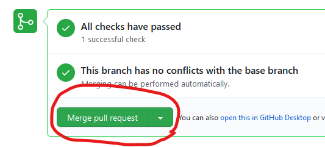
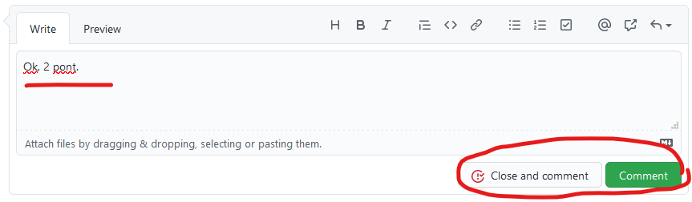
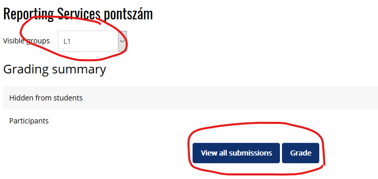

Gyakorlatvezetőknek¶
Gyakorlatvezető/demonstrátor lennél? Az alábbiakat érdemes tudnod.
Gyakorlatvezető feladatai¶
A gyakorlatvezető a tárgy oktatásában segít a gyakorlatok megtartása és a számonkérések során. A feladat az alábbiakból áll.
Félév során 12 gyakorlat megtartása. A gyakorlatok a 2. oktatási héten kezdődnek és a 13. oktatási héten érnek véget. Egy gyakorlatvezető általában 2 gyakorlati csoport oktatásáért felel és mindkét csoportnak 6-6 gyakorlatot tart meg. A gyakorlat fix órarendi időben van, 90 perces, és számítógép laborban tartjuk. Szünetek miatt elmaradó laborokat nem pótolunk, így néha egy-kettővel kevesebb óra lehet. Alkalmanként lehetőséget tudunk adni "fél" gyakorlatvezetésre is, azaz 12 helyett 6 alkalom, egy gyakorlati csoport minden második héten. Illetőleg többet is lehet vállalni.
A gyakorlat kiadott segédlet alapján kerül megtartásra. A gyakorlatvezető feladata a gyakorlatra való felkészülés, a gyakorlat megtartása, ennek során a szükséges háttérismeretek rövid átismétlése, a fontos részek kiemelése, és a hallgatók segítése a gyakorlat során. Egy gyakorlati órán 20 hallgató van a teremben.
2020 őszi félév során a gyakorlatok órarendi időpontjai:
- kedd 10-12
- szerda 14-16
- csütörtök 8-10
- csütörtök 14-16
- csütörtök 16-18
- péntek 12-14
Számonkérések lebonyolításában segítség. A tárgyban ZH, PZH, és 4 vizsga van. Mindegyik számonkérés írásban történik. A gyakorlatvezető feladata a számonkérések felügyelése majd a javításban történő részvétel. A felügyelés ideje alkalmanként körülbelül 1 óra, a javítás ideje létszám függően 0.5-2 óra alkalmanként. Gyakorlatvezetőként körülbelül a számonkérések felében kell részt venni.
Házi feladatok értékelése. A félév során 5 opcionális kis házi feladatot hirdetünk meg. Ezeket a hallgatók otthon, önállóan oldják meg és adják be GitHub pull request-ek formájában. A házi feladatok kiértékelése részben automatikusan történik: egy szoftver lefuttatja és ellenőrzi a beadott munkát. A gyakorlatvezető feladata a beadott házi feladat formai ellenőrzése: kért képernyőképek megfelelnek-e az előírásoknak és konzisztensek-e a beadott forráskóddal. A házi feladat nem kötelező, nem minden hallgató szokta elkészíteni, így házi feladatonként körülbelül 1 óra idő ráfordítást jelent.
Demonstrátorság¶
Hallgató vagy de szeretnél bekapcsolódni az oktatásba? Szeretnéd kipróbálni magad oktatóként? Szeretsz magyarázni? Elvégezted ezt a tárgyat ötössel? Várunk demonstrátorként!
A TVSZ pár követelményt szab demonstrátoroknak: (lásd aktuális TVSZ 165.§):
(5) A demonstrátori pályázat benyújtásának feltétele, hogy a pályázó
a) a demonstrátori jogviszonnyal érintett félévben rendelkezzen aktív hallgatói jogviszonnyal;
b) rendelkezzen alapképzésben vagy osztatlan képzésben szerzett oklevéllel;
c) alapképzésben vagy osztatlan képzésben szerzett oklevél hiányában rendelkezzen legalább annyiszor huszonöt teljesített kredittel, ahány lezárt aktív féléve van és halmozott súlyozott tanulmányi átlageredménye haladja meg a 3,50 értéket; és
d) ne álljon fegyelmi büntetés hatálya alatt.
Ha érdekel a lehetőség, megfelelsz a fenti követelményeknek, és az órarendedbe belefér a gyakorlat (lásd az időpontokat fentebb), keresd a tárgyfelelőst.
Tudnivalók a gyakorlatok megtartásához¶
A tárgy alapképzés (BSc) 5. félévében specializációs tárgy. Ezt azt jelenti, hogy a hallgatók szoftverfejlesztési alapismeretekkel és adatbázis alapismeretekkel rendelkeznek. A tárgyunk célja a tudás elmélyítése és új technológiákba való "belekóstolás". Az új ismeretek átadása az előadásokon történik, a gyakorlatokon a technológiák első kézből való kipróbálása a lényeg. A célunk, hogy mindenki maga is lássa és kipróbálja az adott eszközöket, technológiákat, és lássa a működésüket. A gyakorlatokon változatos technológiákkal foglalkozunk, és ennek megfelelően több féle szoftvert is használunk. Ezek egy része újdonság lesz a hallgatóknak, így a gyakorlatokon a szoftverek alapvető használatát is megmutatjuk.
Oktatás módja¶
A gyakorlatokon elvárt a részvétel, viszont nincs számonkérés (se beugró, se egyéb). Az előadásokon minden szükséges alapismeret elhangzik, de a gyakorlatokon célszerű szóban elismételni mivel foglalkozunk az adott gyakorlaton és az miért fontos. Emellett érdemes kiemelni a feladatok megoldása során az érdekes, avagy feltétlenül megjegyzendő részeket. (Mindemellett a gyakorlat nem előadás, nem kell mindent újból elismételni.)
A gyakorlatokon önálló munkát csak kis mértékben várunk el. A gyakorlatok anyaga jelzi, mit lehet önálló munkának feladni. A gyakorlat nagy részében tehát a gyakorlatvezető projektoron csinálja a feladatokat, a hallgatók követik és maguk is végzik a feladatokat. A bemelegítő feladatok után (amikor a szoftver környezet már ismert), lehet adni gondolkodási időt a hallgatóknak. A megoldást viszont mindig beszéljétek meg közösen.
A gyakorlati anyagban benne van a megoldás. Ha valaki lemarad, vagy otthon meg akarja nézni, így elérheti a megoldásokat. A gyakorlatok során ne csak átmásoljuk az órán, hanem gépeljük be a megoldást, a gondolatmenetet magyarázva közben! Ha lehet, vegyük rá a hallgatókat is erre.
Adminisztratív tudnivalók¶
- A gyakorlatokat óra 15-kor kezdjük pontosan és 90 percet egyben, szünet nélkül tartjuk. A késő hallgatókat első alkalommal figyelmeztessük. Ha többször előfordul vagy zavaróan sokat késik (>5 perc), akkor küldjétek el (TVSZ erre jogot ad!).
- A gyakorlat teljesítésének adminisztrálása Moodle-ben történik. A teljesítés a gyakorlaton való megjelenést, és a munka veletek történő elvégzését jelenti. (Tehát a hallgató nem sétálhat ki a gyakorlat közepén és nem foglalkozhat mással, csak a gyakorlattal. Eseti problémákat azért kezeljünk le, pl. ZH-ja van máshol, stb. Egy-egy kivétel belefér.) Érdemes a jelenlétet a gyakorlat elején könyvelni.
- Ha az órán több ember jelenne meg, mint ahány gép van (hiányzás pótlása pl.), vagy egy gép nem működik, akkor akinek nem jut hely, leül valaki mellé.
- A csoportok között nincs ad-hoc átjárás. Ha valaki jelzi, hogy nem tud részt venni egy gyakorlaton, akkor előre/utólag/ugyanazon a héten egy másik csoportban pótolhat (ha van rá mód). Ennek a megszervezését alapvetően a hallgató bonyolítsa (nézze meg, mikor van még labor azonos anyagból, és egyeztessen a tárgyfelelőssel, vagy a gyakorlatvezetőkkel), de segítsük, ha kell.
Anyagok elérhetősége¶
- A tárgy előadás anyagai, az időpontok és határidők és hivatalos követelmények Moodle-ben lesznek. (Ehhez a tárgy indulásával kapsz hozzáférést.)
-
Gyakorlatok anyagai: lásd a fenti menüben. A gyakorlati anyag minden része teljesen publikus.
A gyakorlatok anyaga GitHub repository-ban van. Ha hibát, elgépelést találsz benne, arra kérünk, hogy javítsd: minden anyag jobb felső sarkában van egy kis ceruza ikon, javítsd a hibát, és küldj PR-t.
Belépések¶
A labor termekhez kulcsra és/vagy kártyára van szükség. Ezeket a titkárságon (QB207) kell kérni. I épülethez kell a teremkulcs, ill. a folyosóhoz szükség van kártyára is (kivéve, akinek van ilyenje). Q épület laborjaihoz hozzáférést külön szervezzük. Demonstrátorok: mindezt megmutatom első alkalommal.
Gépekre: emailben küldöm félév elején. Kis- és nagybetű számít! Pár elgépelés után le lesz tiltva az account!
MS SQL szerver:
- localdb: nincs jelszó, Windows Authentication-t használjunk
- JPA labornál sqlexpress van, SQL Server Authentication kell:
sa/sa
MongoDB: nincs authentikáció
Tudnivalók a házi feladatokkal kapcsolatban¶
A félév során a házi feladatok vannak meghirdetve, amiket adott határidőig kell beadni GitHub-on. Ennek pontos menete a hallgató szemszögéből itt elolvasható.
Ahhoz, hogy hozzáférj a GitHub-on a beadott megoldásokhoz (és ahhoz, hogy a hallgatók ezt hozzád tudják rendelni), kell egy GitHub account. A GitHub nevedet írd meg a tárgyfelelősnek, és felvesz GitHub-on a https://www.github.com/bmeviauac01 organization-be.
Mikor kell értékelni a házit?¶
A házikat a határidő lejárta után kell értékelni. A határidő előtt a megoldásokra nem kell ránézni, kivéve, ha ezt a hallgató kéri. Kérdéssel a hallgató direktben kell megkeressen (pl. emailben vagy GitHub-on).
Hol kell értékelni a házit?¶
A határidő lejárta után a feladatod a hozzád rendelt pull request-ek értékelése. A hallgató azzal adja be a házit, hogy a pull request-et a gyakorlatvezetőjéhez rendeli. Ezeket a GitHub keresőjével a legegyszerűbb megtalálni. A hallgatók gyakran összekeverik az assignee és request review mezőket, így két szűrést is kell nézni:
- https://github.com/pulls?q=is%3Aopen+is%3Apr+org%3Abmeviauac01+assignee%3A%40me+
- https://github.com/pulls?q=is%3Aopen+is%3Apr+org%3Abmeviauac01+review-requested%3A%40me+
Alternatívaként a GitHub értesítő felületét is lehet használni a https://github.com/notifications címen, itt minden hozzád rendelt, vagy review-ra váró PR megjelenik.
Hogyan kell értékelni a házit?¶
A PR-eket egyesével kell megnyitni, és meg kell nézni a PR komment felületén az eredményt. Itt látható lesz a lefuttatott értékelés eredménye, valamint a képernyőképek. Emellett meg kell nézni a forráskódot is.

A forráskódot nem szükséges betűről betűre megnézni - a részletes ellenőrzést elvégzi az automata. A gyakorlatvezető feladata a képernyőképek ellenőrzése, valamint annak eldöntése, hogy a forráskód konzisztens-e a kapott eredménnyel.
A feladatok minta megoldása itt érhető el: https://github.com/bmeviauac01?q=hazi-megoldas. Ezek csak lehetséges megoldások, a hallgató megoldása nem kell ezzel egyezzen.
Az értékelés végeztével:
- Rögzíteni kell a pontszámot Moodle-ben. Ha van iMsc pontszám, azt külön számonkérésben kell rögzíteni.
-
Opcionális, de javasolt: mergelni a PR-t. (Szoftverfejlesztés során ez a logikus lezárása a PR-nek.)

Ha nem mergeled a PR-t, akkor lezárni a PR-t.

-
Ha gond volt a megoldással, változott a pontszám, vagy valamit hozzáfűznél, akkor azt is kommentbe beírni a PR-be.
Problémák és megoldásuk¶
Nem futott le az automata értékelés.
- Lehet, hogy a hallgató draft módban hagyta a PR-t, ezt vissza kell állítani. A PR alján megjelenik ilyenkor egy Ready for review gomb.
- Ha sikertelen volt a kiértékelés, meg lehet ismételni. Ez segít a tranziens hibákon (ritka eset). Ehhez tegyél egy eval nevű labelt-t a PR-re (új label-ként kell létrehozni).
Több, mint 5-ször futott a kiértékelés. Ezt pontlevonással szankcionáljuk. Első alkalommal eltekinthetünk tőle, de mindenképpen tájékoztassuk a hallgatót.
Hiba van a kiértékelő alkalmazásban. Előfordulhat. Keresd a tárgyfelelőst, vagy javítsd a hibát (a kiértékelő programok itt vannak: https://github.com/bmeviauac01/hazi-ahk/).
Jelenlét és eredmény rögzítése Moodle-ben¶
A gyakorlat csoportok Moodle-ban vannak. Neptunból automatikusan kerülnek át. Az eredményeket (gyakorlatokon jelenlét és házi feladat pontszáma) itt könyveljük. Minden gyakorlati alkalom, ill. minden házi feladat külön számonkérés (valamint a házi feladatoknál az iMsc pontok is külön számonkérésben vannak). A jelenlét vagy pontszám rögzítésének menete:
-
Be kell jelentkezni Moodle-re és meg kell keresni a tárgyat.
-
A tárgy kezdőoldalán meg kell keresni a számonkérést.

-
Erre kattintva lehet szűrni a csoportra. A Grade gombbal egyesével jönnek a hallgatók, a View all táblázatosan mutatja őket.
